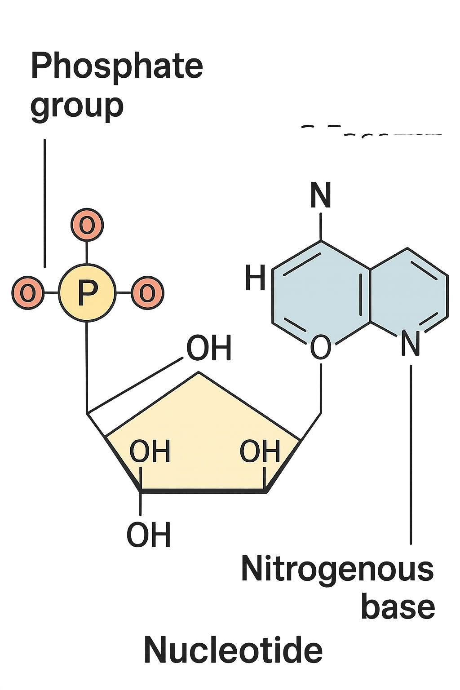
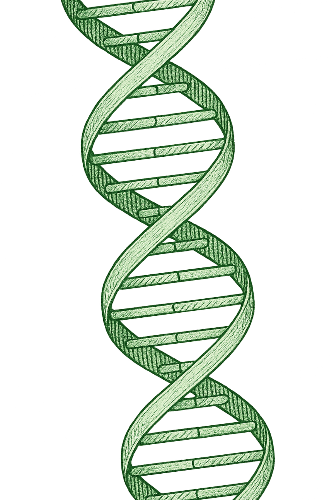
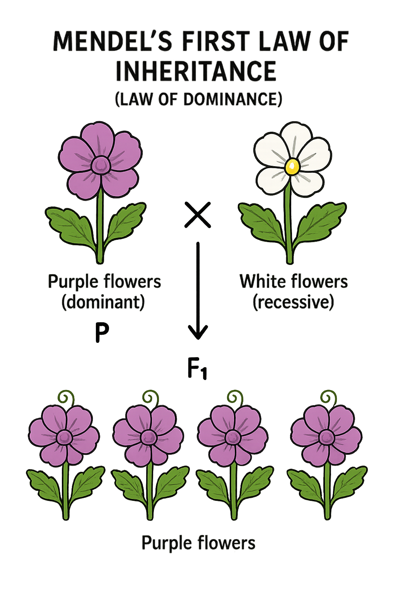
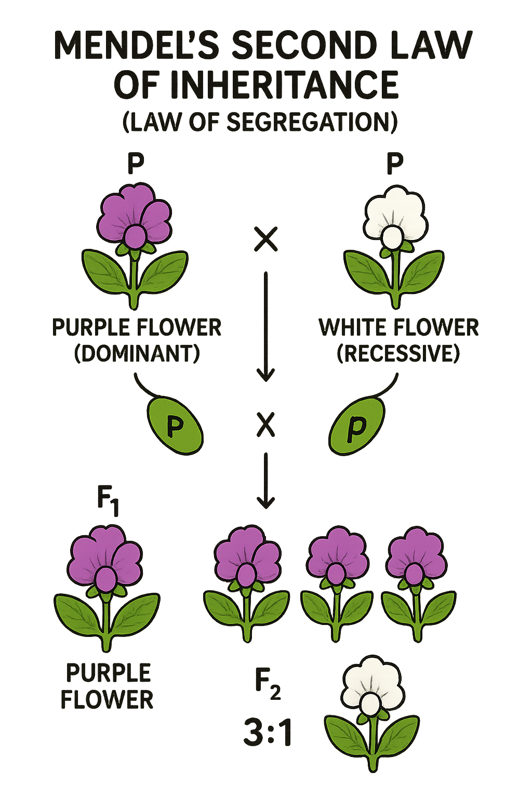
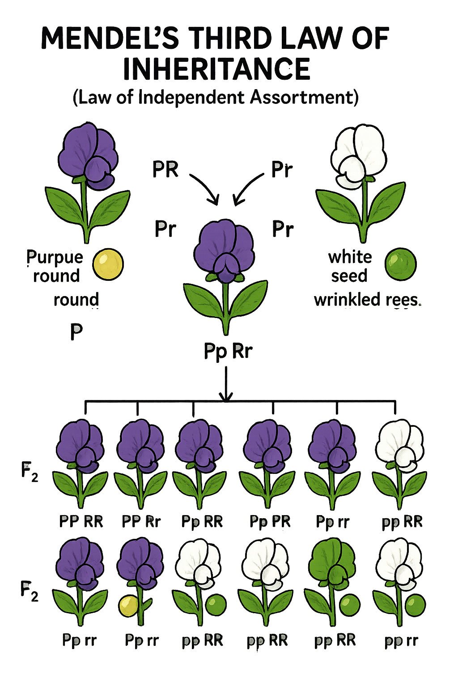
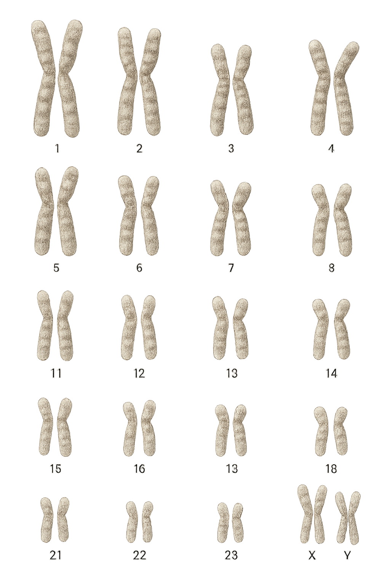

El ADN: la molécula de la herencia
El ADN, o ácido desoxirribonucleico, es la molécula de la herencia que contiene toda la información genética de un organismo, funcionando como un libro de instrucciones que indica cómo construir, desarrollar y mantener un ser vivo. Esta información se encuentra organizada de manera precisa y estructurada, de modo que cada célula del organismo pueda interpretar las instrucciones correctas para producir proteínas y realizar sus funciones
La unidad estructural básica del ADN es el nucleótido, que se repite millones de veces para formar la larga cadena que constituye la molécula.
Cada nucleótido está compuesto por tres elementos:
- Un grupo fosfato
- Un glúcido denominado desoxirribosa
- Una de las cuatro bases nitrogenadas: adenina (A), timina (T), guanina (G) o citosina (C).

La secuencia en la que se ordenan estas bases a lo largo de la cadena es lo que determina la información genética específica de cada individuo, funcionando como un código que guía el desarrollo y las características de los organismos.
Los nucleótidos se enlazan entre sí mediante enlaces fosfato entre el grupo fosfato de uno y el glúcido del siguiente, formando la columna vertebral de la molécula. Las bases nitrogenadas, por su parte, se aparean de manera complementaria: la adenina siempre con la timina y la guanina siempre con la citosina. Estas uniones no son simples conexiones químicas, sino que se mantienen gracias a enlaces de hidrógeno, débiles pero suficientes para mantener unidas las dos cadenas del ADN mientras permiten que se separen durante la replicación. Gracias a esta complementariedad, cada base de una cadena “encaja” exactamente con su pareja en la otra cadena, garantizando que la información genética se conserve con precisión.

La estructura general del ADN es conocida como doble hélice, que se asemeja a una escalera retorcida sobre sí misma. Cada peldaño de esta escalera está formado por los pares de bases nitrogenadas, mientras que los largueros de la escalera corresponden a la cadena de azúcares y fosfatos. Esta disposición helicoidal proporciona estabilidad a la molécula y protege la información genética contenida en su interior. Además, la doble hélice facilita la reparación de errores y la transmisión precisa de la información genética de una célula a otra y de una generación a la siguiente. Así, el ADN no solo almacena la información necesaria para la vida, sino que también asegura que esta información se conserve y se transmita de manera fiable, permitiendo la continuidad de las especies y la diversidad biológica.
Las leyes de Mendel: cómo se heredan los rasgos
El primer gran avance en genética vino de Gregor Mendel, un monje que experimentó con plantas de guisante en el siglo XIX. Mendel descubrió que los rasgos se transmiten de manera predecible a través de lo que hoy llamamos genes.
Gracias a Mendel entendemos por qué un rasgo puede aparecer en los hijos, aunque no se vea en los padres directamente.
Sus leyes básicas son:
Ley de Dominancia
Al cruzar dos líneas puras que difieren en un solo rasgo (por ejemplo, una planta alta y una enana), todos los descendientes de la primera generación filial (F1) serán idénticos entre sí en su fenotipo (aspecto externo) y genotipo (alelos), y serán heterocigotos. Todos ellos presentarán el mismo fenotipo, el cual corresponde al del progenitor dominante.

Ley de la Segregación
Esta ley establece que los alelos que forman un gen se separan (segregan) durante la formación de los gametos, de modo que cada gameto solo recibe un alelo. Cuando se cruzan dos híbridos de la primera generación (F1), se observa que los caracteres recesivos reaparecen en la segunda generación (F2), con una proporción fenotípica de 3:1.

Ley de la Distribución Independiente
Esta ley, que se aplica cuando se estudian dos o más caracteres simultáneamente, dice que los alelos de diferentes genes se transmiten a los gametos de forma independiente unos de otros. En otras palabras, la herencia de un rasgo no afecta la herencia de otro, ya que los alelos para distintos genes se distribuyen aleatoriamente durante la formación de gametos.

Cromosomas: paquetes de ADN
Aunque el ADN es muy largo, en las células se organiza de manera compacta formando los cromosomas. Cada ser humano tiene 46 cromosomas, agrupados en 23 pares: uno de cada padre. Dentro de estos cromosomas están los genes, que son fragmentos de ADN que codifican rasgos específicos. Se puede imaginar así: los cromosomas son como los volúmenes de una enciclopedia, el ADN son las páginas, los genes son los capítulos, y las bases nitrogenadas son las letras que forman las palabras y oraciones de cada capítulo. Todo junto constituye la información necesaria para que la vida funcione.

¿Quieres ir a otras páginas?

Descubre cómo la genética y la música se entrelazan en el estudio del sonido y la herencia
Descubre cómo tus preferencias musicales podrían relacionarse con rasgos genéticos y patrones de personalidad.
¿Quieres ampliar información?
Vídeo
Resumen
- Los genes son las unidades básicas de la herencia.
- Las leyes de Mendel explican cómo se transmiten los genes de padres a hijos.
- El ADN contiene toda la información genética y tiene forma de doble hélice.
- Las bases nitrogenadas (A, T, C, G) forman el código genético.
- Los cromosomas organizan el ADN en paquetes dentro de la célula.
En pocas palabras, la genética nos muestra cómo la información de la vida se guarda, se organiza y se transmite, haciendo posible que descendamos de nuestros padres, compartiendo rasgos y características, y que cada uno de nosotros sea único.